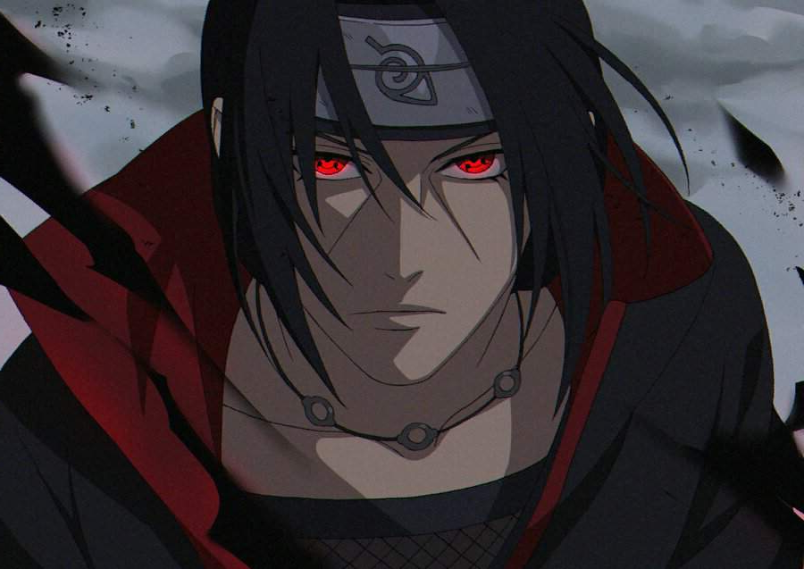

Akatcuki
Акацуки: история группировки
 «Акацуки» стало центральным понятием аниме-сериала «Наруто». Организация, собравшая главных антагонистов сюжета, преследовала цель завладеть девятью чудищами, заточенными
в телах дзинтюрики. Один из демонов поселился в теле главного героя сериала — Наруто: на фоне борьбы между ним и членами группировки Акацуки разворачивается захватывающая
история, полная тайн и необъяснимых явлений. Группа шиноби (ниндзя) возникла за пределами скрытых деревень — десятилетиями она принимала разные формы и контролировалась
разными людьми. Организация была основана в период Третьей войны тремя шиноби — Якихо, Конан и Нагато. Три сироты преследовали благую цель — принести в родной край
долгожданный мир и спокойствие. Их активная деятельность привлекла внимание ниндзя за пределами Амегакуре.
«Акацуки» стало центральным понятием аниме-сериала «Наруто». Организация, собравшая главных антагонистов сюжета, преследовала цель завладеть девятью чудищами, заточенными
в телах дзинтюрики. Один из демонов поселился в теле главного героя сериала — Наруто: на фоне борьбы между ним и членами группировки Акацуки разворачивается захватывающая
история, полная тайн и необъяснимых явлений. Группа шиноби (ниндзя) возникла за пределами скрытых деревень — десятилетиями она принимала разные формы и контролировалась
разными людьми. Организация была основана в период Третьей войны тремя шиноби — Якихо, Конан и Нагато. Три сироты преследовали благую цель — принести в родной край
долгожданный мир и спокойствие. Их активная деятельность привлекла внимание ниндзя за пределами Амегакуре.
Внешний вид и одежда Акацуки
Внешний вид Акацуки подчеркивает принадлежность персонажей к организации. Главная особенность одежды членов группировки — плащ Акацуки. Выполненные из черной ткани свободные балахоны с красным декором и высокими воротниками, скрывающими часть лица, стали олицетворением кровавого дождя, падавшего на Амэгакурэ во времена военных действий. Еще одна важнейшая составляющая образов ниндзя — кольца Акацуки. Каждый член организации имеет кольцо, определяющее его положение на собраниях. На аксессуаре Акацуки Пейна нарисован ноль, у Орочимару – небо, у Какудзу – север, у Сасори – сфера
Итачи Учиха
Итачи Учиха (яп. うちは イタチ, У́чиха Ита́чи) — шиноби отступник, бывший член Анбу, был гением клана Учиха из Скрытого Листа. В молодости Итачи стал международным преступником, уничтожив весь свой клан, оставив в живых лишь своего младшего брата Саске. Впоследствии Итачи присоединился к международной преступной организации, Акацуки, деятельность которой порой приводила его к конфликтам с ниндзя Листа, включая Саске, стремящегося отомстить за свой клан. После смерти Итачи, выяснилось, что его мотивы были куда более сложными, чем казалось изначально — он верил, что все его действия были направлены на благо Саске и Конохи, и он оставался предан Скрытому Листу до самого конца.